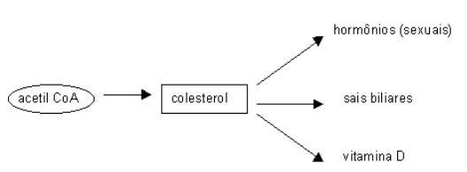
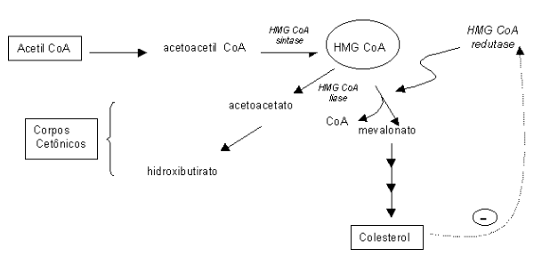

Metabolismo de Colesterol
Objetivos
- Entender que o colesterol não é oxidado em humanos, mas convertido em outros compostos (vitamina D, ácidos biliares, hormônios esteroidais);
- Compreender a diferença dos papeis da HMG CoA sintase (síntese de HMG CoA e de corpos cetônicos) e da HMG CoA redutase (síntese de mevalonato);
- Saber que a síntese de colesterol depende muito de NADPH em várias etapas (esqualeno, lanosterol, colesterol);
- Saber exemplificar compostos naturais e fármacos redutores de colesterol sanguíneo;
- Compreender a ação farmacológica de redutores de colesterol na HMG CoA redutase, e seu controle metabólico.
Introdução
O colesterol representa, juntamente com os ácidos graxos, o que se pode chamar de gordura. Não obstante, o seu metabolismo é completamente diferente do daqueles. Em primeiro lugar, o colesterol não produz energia. Ao invés disso, é utilizado pelos animais como parte da estrutura de suas membranas celulares. Também tem outra função curiosa. O colesterol, uma gordura, é utilizado para se fazer um tipo de sabão natural no corpo, que carrega as gorduras para os tecidos, os sais biliares. Neste caso, uma gordura ajudando no transporte de gorduras. Ou então pra fazer os chamados esteróides. Estes são formados por alguns hormônios, dentre eles os sexuais, e a vitamina D.
Os ácidos graxos são quebrados em um grande número de pedaços. O colesterol não. A sua estrutura, na verdade um conjunto unido de quatro anéis orgânicos, não consegue ser quebrada no organismo humano, apenas modificada ligeiramente. Dessa forma, quando há um excesso de colesterol no corpo, as células tendem a transformá-lo em alguns de seus derivados, além da aumentar sua excreção pelas fezes. O ciclo de faz-e-quebra é mais ou menos assim: as células do fígado constroem o colesterol. Esse colesterol pode ir para as membranas, deixando-as mais flexíveis, ou virar sais biliares. Esses se combinam com gorduras da dieta no intestino, transportando-as de volta pro fígado, para ser degradadas. Os sais biliares, por sua vez, são recuperados no intestino.
Esse ciclo intestino-sangue-fígado-intestino têm o nome chique de circulação entero-hepática. O colesterol é feito a partir da acetil CoA, aquele composto que une a glicólise ao ciclo de Krebs. São realizadas uma série de operações que transformam o acetil CoA no composto de 4 anéis do colesterol. Ah, sim, e plantas não possuem colesterol.

Detalhes
O colesterol e os esteróides são sintetizados principalmente pelo fígado, intestino, córtex adrenal, e tecidos reprodutivos. Têm por função serem precursores de ácidos biliares (emulsificação de lipídios), constituintes da membrana celular (flexibilidade estrutural da membrana), constituirem os hormônios esteróides e a vitamina D. A lógica da via de síntese, que ocorre no citosol, envolve a utilização de carbonos do acetil CoA, com consumo de NADPH e ATP, e uma rota dirigida por hidrólise da ligação tioéster de alta energia do acetil CoA.
Os principais intermediários da síntese são acetoacetato -> HMG CoA (hidroximetilglutaril CoA) -> mevalonato -> IPP (isopentenil pirofosfato) -> GPP (geranil pirofosfato) -> FPP (farnesil pirofosfato) -> lanosterol -> colesterol. A síntese de colesterol e de corpos cetônicos tem em comum a produção inicial de HMG CoA.
A síntese de colesterol pode ser regulada através da inibição da HMG CoA redutase por retroalimentação, esterificação do colesterol por ACT (acil CoA:colesterol aciltransferase), redução na transcrição gênica de receptores de LDL, por controle hormonal (glucagon inibe HMG CoA redutase), ou por inibição por drogas (lovastatina, compoetidor da HMG CoA redutase).
Seres humanos não conseguem oxidar o anel esteroidal a CO2 e H2O. A lógica da vida de degradação do colesterol envolve uma conversão inicial do mesmo em sais e ácidos biliares (cólico e deoxiclólico) durante a circulação entero-hepática, e secreção de colesterol na bile.

As bactérias do intestino podem remover a glicina e taurina dos sais biliares, ou converter alguns dos ácidos biliares primários em secundários, removendo um grupo hidroxila (produção do ácido deoxicólico, a partir do cólico, ou do litocólico, a partir do quneodeoxicólico). Os sais biliares secretados no intestino são absorvidos no íleo por transporte ativo, e levados ao sangue portal a partir da células da mucosa intestinal, sendo eficientemente removidos pelas células parenquimatosas do fígado.
O contínuo processo de secreção de sais biliares na bile, sua passagem através do duodeno onde alguns são convertidos em ácidos biliares, e seu retorno subsequente ao fígado, como uma mistura de ácidos e sais biliares, é denominado por circulação entero-hepática. Os hormônios esteróides, formados por 3 classes, têm como precursor o colesterol. São eles os glicorticóides (cortisol, corticosterol), mineralocorticóides (aldosterona), e hormônios sexuais (andrógenos, estrógenos e progestágenos).
A lógica da via de síntese hormonal envolve um encurtamento da cadeia de hidrocarboneto do colesterol, e hidroxilação do núcleo esteróide. Requer NADPH, e possui o precursor geral pregnenolona. A liberação hormonal se inicia com uma secreção hipotalâmica de fator liberador de corticotropina (para corticosteróides, ou seja, glicorticóides e aldosterona) ou de gonadotropina (para hormônios sexuais). Segue-se uma migração por rede capilares até a glândula pituitária, e secreção de ACTH (“adrenocoricothropic hormone”) para corticosteróides, ou de LH (“lutenising hormone”) e FSH (“folicule stimulating hormone”), para hormônios sexuais. Do ponto de vista funcional, existe um grande número de atuações orgânicas dos hormônios esteróides, para além de seus sítios de síntese.
A lógica da via de síntese hormonal envolve um encurtamento da cadeia de hidrocarboneto do colesterol, e hidroxilação do núcleo esteróide. Requer NADPH, e possui o precursor geral pregnenolona. A liberação hormonal se inicia com uma secreção hipotalâmica de fator liberador de corticotropina (para corticosteróides, ou seja, glicorticóides e aldosterona) ou de gonadotropina (para hormônios sexuais). Segue-se uma migração por rede capilares até a glândula pituitária, e secreção de ACTH (“adrenocoricothropic hormone”) para corticosteróides, ou de LH (“lutenising hormone”) e FSH (“folicule stimulating hormone”), para hormônios sexuais. Do ponto de vista funcional, existe um grande número de atuações orgânicas dos hormônios esteróides, para além de seus sítios de síntese.
Assim, cortisol (córtex adrenal) age na degradação de proteínas e gliconeogênese, aldosterona (córtex adrenal) atua na retenção de Na+ e excreção de K+ nos túbulos renais, em ação conjunta com as angiotensinas, LH na produção testicular de andrógenos e ovariana de estrógenos e progesterona, e FSH, no crescimento dos folículos ovarianos e na espermatogênese testicular. O mecanismo de hormônios esteroidais inclui a travessia da membrana celular, com posterior ligação a receptor específico citosólico ou nuclear (transcrição), causando estímulo/inibição de genes específicos.
Aplicação
Existe um vasto quadro de enfermidades relacionadas à produção de colesterol, das quais a colelitíase figura-se dentre as mais comuns. A colelitíase ocorre quando da insolubilização do colesterol da bile, por mal-absorção de sais biliares, obstrução do trato biliar, ou inibição da síntese de sais biliares, ocasionando o aparecimento de cálculos biliares.
A hipercolesterolemia também é muito comum, mas suas origens podem ser multifatoriais. Não obstante, resulta em níveis plasmáticos de colesterol acima de 220 mg/dl de plasma, requerendo atuação imediata, uma vez que níveis elevados de colesterol estão relacionados com índices de enfarte do miocárdio e arterosclerose. Duas linhas de frente clínica são então adotadas. A primeira constitui em averiguar o teor de lipoproteínas séricas, especialmente a LDL, e de reduzir o colesterol da dieta (injestão prescrita para menos de 30% de gorduras totais). A segunda linha terapêutica envolve a administração de drogas tais como colestiraina e colestipol, que se ligam a sais biliares, aumentando a excreção de colesterol nas fezes, e aumentando a captação hepática de LDL.
Complementarmente, o uso de lovastatin, que inibe a HMG CoA redutase , reduz a síntese endógena de colesterol, contribuindo para sua diminuição no plasma. Nas moléstias relacionadas aos hormônios esteróis, vale a pena citar a doença de Addison, uma insuficiência do córtex adrenal na produção de glicorticóides e mineralocorticóides, com o paciente experimentando hipotensão, excesso de pigmentação epidérmica, e baixo sódio no soro, e a síndrome de Conn, onde o excesso de mineralocorticóides pode resultar em hipertensão e baixo potássio no soro.
Além destes, síndrome de Turner (deficiência de estradiol, resultando na incapacidade de desenvolvimento de caracteres femininos secundários e perda de menstruação), ou o pseudo-hermafroditismo masculino (deficiência hipotalâmica ou no reconhecimento de proteínas para receptores andrógenos, resultando na incapacidade de desenvolvimento de carcteres masculinos secundários).
Produção animal
Das carcaças de consumo, a suína é a que detém o menor teor de colesterol, abaixo mesmo de bovinos e de frango. Num quadro comparativo, enquanto que a carne suína possui um total de 148 mg de colesterol por 100 g de peso, a carne bovina possui 157 mg e a de frango, 242 mg. No frango, 50 % do colesterol encontra-se na pele, com o restante possuindo igual teor que da carne suína. Para reduzir o teor de colesterol no frango, algumas iniciativas tem trabalhado adicionando à ração dessas aves 2% de carvão vegetal, rico em cálcio, fósforo e potássio. Com isto, tem-se conseguido uma redução de colesterol no frango de até 34%, com aumento de 3% na postura e redução de 27% de ovos trincados. Contra-filé, coxão mole e coxão duro, na carne bovina, e bisteca, lombinho e pernil, na carne suína, possuem todos aproximadamente 50 mg de colesterol por 100 g de corte.
Plantas e colesterol.
Vegetais não possuem colesterol, mas sim outros esteróides, como fitosterol e ergosterol, este último o esteróide mais abundante nessas espécies, e também produzido por fungos. Não obstante, o mercado encontra-se repleto de produtos de origem vegetal, como batata-frita ou azeite de oliva, com o aviso “não contém colesterol” em seus rótulos, uma forma enganosa de propagação na mídia.
A adição de gordura animal (juntamente com óleo de soja) à ração animal, principalmente de equinos, tem melhorado o rendimento de animais de serviço, corrida e enduro. Além disso, há um aumento da palatabilidade das rações, maior fornecimento de ácidos graxos voláteis, e redução de poeira nas rações.
Derivados de colesterol.
A partir do colesterol podem ser sintetizadas as vitaminas lipossolúveis A, E, D e K. Rebanho equino possui deficiências vitamínicas principalmente relacionadas aos complexos A e E, sendo a carência de vitamina D mais comun a animais em confinamento. As exigências nutricionais de vitaminas A, D e E, podem ser supridas com forragem seca de alta qualidade. Deficiências de vitamina K parecem menos prováveis em animais, posto que tanto mono quanto poligástricos são capazes de sintetizá-la a partir da atividade microbiana do ceco. O emprego de vitamina E como suplemento vitamínico parece possuir um efeito positivo na redução de lesões musculares, principalmente de cavalos induzidos a frequentes exercícios.
Esteróides e avicultura.
Outros derivados do colesterol incluem os hormônios esteroidais, muitas vezes apregoados como vilões nos aditivos nutricionais, principalmente na avicultura. Em relação ao uso de hormônios (esteróides ou não) na melhoria da produtividade animal existe um ponto pacífico: a legislação brasileira tem abolido o seu emprego desde 1976, através do 6o. artigo do decreto 76986 do então presidente Ernesto Geisel. Sendo assim, apenas o contrabando de insumos hormonais justificaria o mito do emprego de tais compostos. Não obstante, é importante que se esclareça alguns dados. A dimenão da indústria avícola brasileira, cuja produção de ração gira em torno de 18 milhões de toneladas ao ano, impossibilita o sigilo sobre a importação de hormônios sem denúncia comercial clara.
A maioria das informações relativas ao emprego de hormônios nesta indústria são controversas no tangente a possíveis benefícios do desempenho de frangos de corte, incluindo os similares beta-adrenérgicos. Um frango de corte está pronto para o abate por volta do 42o. dia após o nascimento, o que dificulta a absorção e efeitos nutricionais de hormônios de caráter esteroidal, que agem sobre a estrutura do DNA celular. A indústria avícola brasileira encontra-se ao 2o. lugar no pódio das exportações mundiais de frango, o que não ocorreria caso fossem detectados traços hormonais nas crias.
Ainda contrapondo ao mito do emprego de esteróides e derivados na granja avícola, um dado numismático se sobressai: cada frango rende ao seu produtor brasileiro em torno de $ 0,01, ou um cent de dólar (R$ 0,03). Outro fato associado ao mito de esteróides em frangos vem do fato de que o animal de granja comercial difere em seu aspecto visual em relação ao chamado “frango caipira”. No entanto, a pigmentação mais forte da carne de roça encontra-se mais sedimentada pelos aspectos nutricionais do ambiente in natura em que vivem os animais, do que propriamente pela ausência de aditivos hormonais naqueles.
Esteróides e bovinos
Hormônios esteroidais e seus derivados são, contudo, adicionados à nutrição de animais com grande tempo gestacional (bovinos e suínos, por exemplo), mas os resultados ainda são passíveis de interpretação certeira. Neste sentido, é conhecido a dosagem de teores plasmáticos de progesterona pré-IA ao final da fase lútea em rebanhos bovinos, a qual encontra-se associada proporcionalmente à taxa de concepção em novilhas leiteiras e em vacas e novilhas de corte. Trataments com progestágenos, entretanto, são conhecidos aumentar o período de dominância do folículo, com redução significativa nas taxas de prenhez.
Outros autores tem atribuido a elevação de estradiol à presença de folículos persistentes, influenciando nas condições das tubas uterinas e do útero, com consequências negativas na fertilidade animal. A administração de progesterona pós-IA, contudo, tem apresentado um maior desenvolvimento e maturação de embriões, cujas dimensões e taxas aumentadas de secreção de proteínas indicam sua funcionalidade e maturidade superiores em relação aos que não receberam o complemento.
Síntese
- Sintese principal: fígado, intestino, córtex adrenal e tecidos reprodutivos;
- Funções: membrana celular, precursor de ácidos biliares, hormônios esteróides e vit. D;
- Lógica da via de síntese: carbonos do acetil CoA, com consumo de NADPH e ATP, e rota dirigida por hidrólise da ligação tioéster de alta energia do acetil CoA;
- Principais intermediários: acetoacetato -> HMG Coa -> mevalonato -> IPP -> GPP -> FPP -> lanosterol -> colesterol;
- Localização: citosol;
- Colesterol e corpos cetônicos: tem em comum a síntese inicial de HMG coA (redutase e sintase, respectivamente);
- Regulação da síntese de colesterol: inibição de HMG CoA redutase por retroalimentação, esterificação do colesterol por ACAT (acil CoA:colesterol aciltransferase), redução na transcrição do gene de receptores de LDL, controle hormonal (glucagon inibe HMG CoA redutase), inibição por drogas (lovastatina, competidor da HMG CoA redutase);
- Lógica da via de degradação: conversão em sais e ácidos biliares (cólico e deoxicólico) durante a circulação entero-hepática, e secreção de colesterol na bile; seres humanos não conseguem oxidar o anel a CO2 e água;
- Doenças: colelitíase; cálculos de colesterol na bile, formados por insolubilização do mesmo na deficiência de sais biliares, devido a mal-absorção de ácidos biliares, obstrução do trato biliar, ou inibição da síntese de ácidos biliares;
- Hormônios esteróides: colesterol como precursor de 5 classes hormonais, a saber: glicorticóides (cortisol), mineralocorticóides (aldosterona), hormônios sexuais (andrógenos, estrógenos e progestágenos);
- Lógica da via de síntese hormonal: encurtamento da cadeia de hidrocarboneto do colesterol e hidroxilação do núcleo esteróide; requer NADPH, e tem o precursor geral pregnenolona;
- Liberação hormonal: secreção hipotalâmica de fator liberador de corticotropina (para corticosteróides, ou seja, glicorticóides mais aldosterona) ou de gonadotropina (para hormônios sexuais), migração por rede de capilares até a pituitária, e secreção de ACTH (para corticosteróides), ou de LH e FSH (para hormônios sexuais);
- Funções hormonais: cortisol (córtex adrenal, degradação de proteínas e gliconeogênese), aldosterona (córtex adrenal, retenção de Na+ e excreção de K+ nos túbulos renais, em ação conjunta com angiotensina), LH (produção testicular de andrógenos e ovariana de estrógenos e progesterona), FSH (crescimento dos folículos ovarianos e espermatogênese testicular);
- Mecanismo de ação de hormônios esteróides: atravessam a mebrana celular, composterior ligação a receptor específico citosólico ou nuclear (transcrição), causando estímulo/inibição de genes específicos.